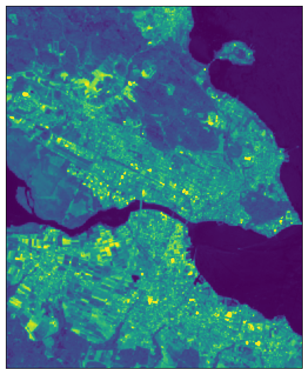
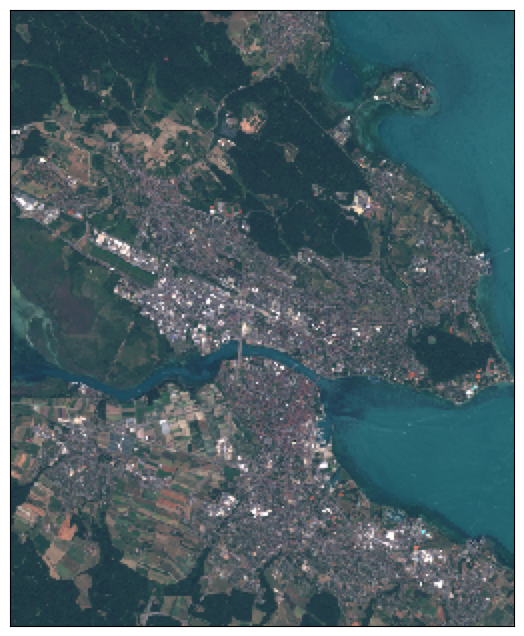
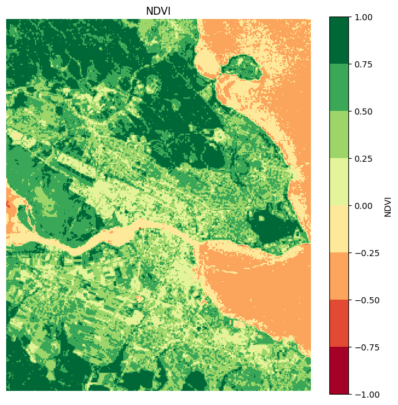

Sentinel2 Satellite image downloader using.
Library: Sentinelhub
Sentinel Hub is a cloud-based platform that provides easy access to satellite imagery and geospatial data from various Earth observation missions, including Sentinel-1, Sentinel-2, and others.
In this notebook, we explore how to access and download satellite imagery from Sentinel Hub using its powerful API. By leveraging Sentinel Hub’s capabilities, we can retrieve data from these missions and process it to meet specific analysis requirements, making it a useful tool for environmental monitoring, geospatial analysis, and research applications.
%reload_ext autoreload
%autoreload 2
%matplotlib inline
from sentinelhub import (
SHConfig,
DataCollection,
SentinelHubCatalog,
SentinelHubRequest,
SentinelHubStatistical,
BBox,
bbox_to_dimensions,
CRS,
MimeType,
Geometry,
MosaickingOrder,
)
import datetime
import os
import getpass
import matplotlib.pyplot as plt
import numpy as np
API and Authentication
# Only run this cell if you have not created a configuration.
config = SHConfig()
config.sh_client_id = 'sh-349741a9-2278-4b14-912b-f9bfa6e27d63'
config.sh_client_secret = 'EvhABuBoJR6i2yXZ3B91KKSUyWXq3fX4'
config.sh_base_url = 'https://sh.dataspace.copernicus.eu'
config.sh_token_url = 'https://identity.dataspace.copernicus.eu/auth/realms/CDSE/protocol/openid-connect/token'
config.save("cdse")
config = SHConfig("cdse")
Define bounding box and resolution
bbox_wgs84 = [9.1170, 47.6330, 9.2180, 47.7160]
resolution = 30
aoi_bbox = BBox(bbox=bbox_wgs84, crs=CRS.WGS84)
aoi_size = bbox_to_dimensions(aoi_bbox, resolution=resolution)
time_interval = ('2023-06-01', '2023-08-31')
Satellite image Download and Visualization
evalscript_true_color = """
//VERSION=3
function setup() {
return {
input: [{
bands: ["B02", "B03", "B04"]
}],
output: {
bands: 3
}
};
}
function evaluatePixel(sample) {
return [sample.B04, sample.B03, sample.B02];
}
"""
evalscript_all_bands = """
//VERSION=3
function setup() {
return {
input: [{
bands: ["B01","B02","B03","B04","B05","B06","B07","B08","B8A","B09","B10","B11","B12"],
units: "DN"
}],
output: {
bands: 13,
sampleType: "INT16"
}
};
}
function evaluatePixel(sample) {
return [sample.B01,
sample.B02,
sample.B03,
sample.B04,
sample.B05,
sample.B06,
sample.B07,
sample.B08,
sample.B8A,
sample.B09,
sample.B10,
sample.B11,
sample.B12];
}
"""
True color
request_true_color = SentinelHubRequest(
evalscript=evalscript_true_color,
input_data=[
SentinelHubRequest.input_data(
data_collection=DataCollection.SENTINEL2_L1C.define_from(
"s2l1c", service_url=config.sh_base_url
),
time_interval=time_interval,
mosaicking_order=MosaickingOrder.LEAST_CC,
)
],
responses=[SentinelHubRequest.output_response("default", MimeType.TIFF)],
bbox=aoi_bbox,
size=aoi_size,
config=config,
)
true_color_imgs = request_true_color.get_data()
plot_image(
true_color_imgs[0],
factor=3.5 / 255,
clip_range=(0, 1),
figsize=(8,8)
)
---------------------------------------------------------------------------
NameError Traceback (most recent call last)
Cell In[10], line 1
----> 1 plot_image(
2 true_color_imgs[0],
3 factor=3.5 / 255,
4 clip_range=(0, 1),
5 figsize=(8,8)
6 )
NameError: name 'plot_image' is not defined
All bands
## Save
save_images = True
save_directory = "./Sentinelhub/"
request_all_bands = SentinelHubRequest(
data_folder = save_directory,
evalscript=evalscript_all_bands,
input_data=[
SentinelHubRequest.input_data(
data_collection=DataCollection.SENTINEL2_L1C.define_from(
"s2l1c", service_url=config.sh_base_url
),
time_interval=time_interval,
mosaicking_order=MosaickingOrder.LEAST_CC,
)
],
responses=[SentinelHubRequest.output_response("default", MimeType.TIFF)],
bbox=aoi_bbox,
size=aoi_size,
config=config,
)
all_bands_response = request_all_bands.get_data(save_data=save_images)
plot_image(
all_bands_response[0][:, :, 12],
factor=3.5 / 1e4,
vmax=1,
figsize=(8,8))

print(np.shape(all_bands_response))
(1, 308, 252, 13)
plot_image(
all_bands_response[0][:, :, [3, 2, 1]],
factor=3.5 / 1e4,
clip_range=(0, 1),
figsize=(8,8))

import numpy as np
import matplotlib.pyplot as plt
# Extract the NIR (Band 8) and Red (Band 4) bands
nir = all_bands_response[0][:, :, 7]
red = all_bands_response[0][:, :, 3]
# Compute NDVI (Add a small number to avoid division by zero)
ndvi = (nir - red) / (nir + red + 1e-10)
# Plot NDVI
plt.figure(figsize=(8, 8))
cmap = plt.get_cmap('RdYlGn',8)
plt.imshow(ndvi, cmap=cmap, vmin=-1, vmax=1)
plt.colorbar(label='NDVI')
plt.title('NDVI')
plt.axis('off')
plt.show()
